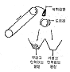
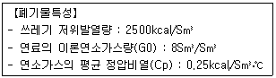
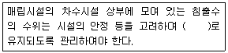
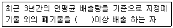
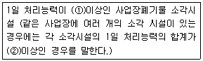

1과목: 폐기물 개론
1. 인구 200,000인 어느 도시의 1인 1일 쓰레기 배출량이 1.8㎏이다. 쓰레기 밀도가 0.5ton/m3이라면 적재량 15m3의 트럭이 처리장으로 한달 동안 운반해야 할 횟수는? (단, 한 달은 30일, 트럭은 1대 기준이다.)
2. 폐기물 선별에 대한 설명 중 옳지 않은 것은?
3. 완전히 건조 시킨 폐기물 10g을 취해 화분량을 조사하니 2g이었다. 이 폐기물의 원래 함수율이 30% 였다면, 이 폐기물의 습량기준 회분중량비(%)는?
4. 적환장(transfer station)을 설치하는 일반적인 경우와 가장 거리가 먼 것은?
5. 쓰레기 발생량에 영향을 미치는 요인에 관한 설명으로 알맞지 않은 것은?
6. 폐기물의 성상분석 단계로 가장 알맞은 것은?
7. X90=3.8㎝로 도시폐기물을 파쇄하고자 할 때(즉, 90% 이상을 3.8㎝보다 작게 파쇄하고자 할 때) Rosin-Rammler 모델에 의한 특성입자크기 X0는?
8. 폐기물 파쇄에 대한 설명 중 틀린 것은?
9. 폐기물의 입도를 분석한 결과 입도누적 곡선상 최소 입경으로부터 10%가 입경 2㎜, 20%는 3㎜, 40%는 5㎜, 60%는 8㎜, 80%는 10㎜, 90%는 20㎜ 였을 때 균등계수는?
10. 폐기물 원소분석에 있어 별도의 장치나 기기(연소관, 환원관 및 흡수관의 충전물 교환 등)를 필요로 하지 않고 자동원소 분석기를 이용하여 동시에 분석할 수 있는 항목만 열거한 것은?
11. 다음 중 유해폐기물 불법매립과 관련이 깊은 상황은?
12. 밀도가 500㎏/m3인 쓰레기 5ton을 압축시켰더니 처음 부피 보다 60% 줄었다. 이 경우 Compact ratio는?
13. 다음 그림이 나타내는 선별방법은?

14. 생활폐기물 발생량의 조사방법 중 직접계근법에 관한 설명과 가장 거리가 먼 것은?
15. 인구 10,000명의 도시에서 1일 1인당 1.2㎏의 쓰레기를 배출하고 있다. 이때 쓰레기의 평균 겉보기 밀도는 500㎏/m3이다. 일주일간 발생되는 쓰레기의 양은? (단, 일요일은 1.5㎏/인ㆍ일의 율로 계산)
16. 함수율 95%의 슬러지를 함수율 50%인 슬러지로 만들려면 슬러지 1ton당 얼마의 수분을 증발시켜야 하는가? (단, 비중은 1.0 기준)
17. 투입량이 1ton/h 이고, 회수량이 700㎏/h(그 중 회수대상물질은 550㎏/h)이며 제거량은 300㎏/h(그중 회수대상물질은 70㎏/h)일 때 선별효율은?
18. 폐기물의 수거노선 설정 시 고려해야 할 사항으로 틀린 것은?
19. 5백만 ton/yr의 쓰레기를 5000명의 인부가 수거하고 있다. 수거능력은 MHT로 얼마인가?(단, 수거인부 1일 작업시간은 8시간, 연중 휴무일수는 65일이다.)
20. 최소 크기가 10㎝인 폐기물을 2㎝로 파쇄하고자 할 때 kick's 법칙에 의한 소요동력은 동일 폐기물을 4㎝로 파쇄할 때 소요되는 동력의 몇배인가? (단, n=1로 가정한다.)
2과목: 폐기물 처리 기술
21. 포도당(C6H12O6)으로 구성된 유기물 1㎏이 혐기성 미생물에 의해 완전히 분해되어 생성되는 메탄의 용적(Sm3)은?
22. 토양오염 처리방법의 하나인 토양증기추출법(Soil Vapor extraction)과 관련된 인자와 그 기준으로 틀린 것은?
23. 폐기물을 화학적으로 처리하는 방법 중 용매추출법에 대한 특징이 아닌 것은?
24. 매립지에서 유기물의 완전 분해식을 C68H111O50N + aH2O ⇒ bCH4 + 33CO2 + NH3로 가정할 때 유기물 100㎏을 완전 분해시 소모되는 물의 양은?
25. 밀도가 2.0g/cm3인 폐기물 20㎏에다 고형화재료를 10㎏첨가하여 고형화시킨 결과 밀도가 2.8g/cm3으로 증가하였다면 부피변화율(VCF)은?
26. 어느 도시에 사용할 매립지의 총용량은 6,132,000m3이며 그 도시의 쓰레기 배출량은 2㎏/인ㆍ일이다. 매립지에서 압축에 의한 쓰레기 부피 감소율이 30%일 경우 매립지를 사용할 수 있는 년 수는? (단, 수거대상인구 800,000명, 발생 쓰레기밀도 500㎏/m3으로 함)
27. 매립지 내의 물의 이동을 나타내는 Darcy의 법칙을 기준으로 침출수의 유출을 방지하기 위한 옳은 방법은?
28. 점토가 매립지의 차수막으로 적합하기 위한 기준으로 틀린 것은?
29. 결정도(Crystallinity)와 합성 차수막의 성질에 대해 잘못 설명된 것은?
30. 총고형물합이 36,500㎎/ℓ, 휘발성 고형물이 총고형물 중 64.5%인 폐기물 60㎘/day를 혐기성 소화조에서 소화시켰을 때 1일 가스 발생량은? (단, 폐기물 비중 1.0, 가스발생량은 0.35m3/㎏ (VS)이다.)
31. 폐기물 고형화 방법 중 배기가스를 탈황시킬 때 발생되는 슬러지(FGD 슬러지)의 처리에 많이 이용되는 것은?
32. 시멘트를 이용한 유해폐기물 고화처리시 압축강도, 투수계수, 물/시멘트비(water/cement ratio)사이의 관계를 바르게 설명한 것은?
33. 함수울이 97%, 총 고형물중의 유기물이 80%인 고형물을 소화조에 200m3/day의 율로 투입하여 유기물의 2/3가 가스화 또는 액화 후 함수율 95%인 소화 슬러지가 얻어졌다고 한다. 소화슬러지 량은? (단, 슬러지의 비중 1.0)
34. 유해성물질(지정폐기물)을 고형화하는 열중합체법에 대한 설명이다. 옳지 않은 것은?
35. 일반적으로 하수 슬러지를 혐기성 소화처리 하는 경우, 소화조 내 유기산(Volatile acid) 농도로 가장 적절한 것은?
36. 함수율 95%인 분뇨의 유기탄소량은 30%/TS이고 총질소량은 15%/TS이다. 이 분뇨와 혼합할 볏짚의 함수율은 25%이며 유기 탄소량은 85%/TS, 총질소량은 3%/TS이다. 분뇨:볏짚을 무게비 2:3으로 혼합했을 경우의 C/N비는?
37. 매립지의 연직 차수막에 관한 설명으로 맞는 것은?
38. 침출수가 점토층을 통과하는 데 소요되는 시간을 계산하는 식으로 알맞은 것은?(단, t: 통과시간(year), d: 점토층두께(m), h: 침출수수두(m), K: 투수계수(m/year), n: 유효공극률)
39. 합성차수막인 CSPE에 대한 설명으로 틀린 것은?
40. 함수율이 90%인 슬러지의 겉보기비중이 1.02였다. 이 슬러지를 진공여과기로 탈수하여 함수율이 60%인 슬러지를 얻었다면 이 슬러지가 갖는 겉보기 비중은? (단, 물의 비중은 1.0)
3과목: 폐기물 소각 및 열회수
41. 함수율 70%인 슬러지 케이크 10ton을 소각할 때 소각재 발생량(㎏)은? (단, 건조케이크 건조중량당 무기성분 20%, 유기성분 중 연소율 90%, 소각에 의한 무기물 손실은 없다.)
42. 황선분이 1%인 폐기물을 10t/hr 소각하는 소각로에서 배기가스 중의 SO2를 CaCO3로 완전히 탈황하는 경우 이론상 하루에 필요한 CaCO3의 양은? (단. 폐기물 중의 S는 모두 SO2로 전환되며, 소각로의 1일 가동시간은 8시간, Ca 원자량:40)
43. 이론적으로 순수한 탄소 3㎏을 완전 연소시키는데 필요한 산소의 양은?
44. 공기를 사용하여 C3H8을 완전 연소시킬 때 건조가스 중의 (CO2)max(%)는?
45. 일반적으로 직경이 10~20㎜이고 길이가 30~50㎜인 형태와 크기를 가지며 보관이나 운반의 효율을 높이는 동시에 단위 무게당 열량을 향상시킨 RDF의 종류는?
46. 폐기물 소각로의 폐열회수 및 이용설비에 대한 설명으로 틀린 것은?
47. 폐지 500㎏을 소각하고자 한다. 이론공기량(Sm3)은? (단, 폐지의 성분은 모두 셀룰로오스(C6H10O5)로 가정함)
48. 밀도가 600㎏/m3인 도시쓰레기 100ton을 소각시킨 결과 밀도가 1200㎏/m3인 재 10ton이 남았다. 이 경우 부피 감소율과 무게감소율 중 큰 것은?
49. 【반응열의 양은 반응이 일어나는 과정에 무관하고, 반응 전후에 있어서의 물질 및 그 상태에 의하여 결정된다.】위의 내용으로 알맞은 법칙은?
50. 다음과 같은 특성을 갖는 액상 폐기물을 완전 연소시켰을 때 이론적인 연소온도는 몇℃인가?

51. 다음은 로터리 킬른식(rotary kiln)소각로의 특징에 대한 설명이다. 이 중 적합하지 않는 것은?
52. 백필터를 이용하여 가스유량이 100m3/min인 함진 가스를 1.5㎝/sec의 여과속도로 처리하고자 한다. 소요되는 여과포의 유효면적(m3)은?
53. 쓰레기 소각로를 설계하기 위한 쓰레기 발열량 기준이 500kcal/m3ㆍh인 전연속식 소각로의 용적은?
54. 유동층 소각로의 장점이 아닌 것은?
55. 열교환기에 관한 설명으로 옳지 않은 것은?
56. 어떤 폐기물의 원소조성이 다음과 같고, 실제공기량이 6Sm3일 때 공기비는? (단, 가연분 : 60%(C=45%, H=10%, O=40%, S=5%), 수분:30%, 회분 : 10%)
57. 액체 주입형 연소기(Liquid Injection Incinerator)에 대한 설명으로 틀린 것은?
58. 탄소, 수소의 중량조성이 각각 86%, 14%인 액체연료를 매시 5㎏ 연소하는 경우 배기가스의 분석치는 CO2 10.5%, O2 5.5%, N2 84%였다. 이 경우 매시 실제 필요한 공기량은?
59. 메탄올(CH3OH) 3㎏을 연소하는데 필요한 이론 공기량(A0)은?
60. 소각대상물인 염사소성 플라스틱의 저위발열량은 5,400kcal/㎏이며, 이 플라스틱을 소각시 발생 되는 연소재 중의 미 연손실을 저위발열량의 10%이고 불완전연소에 의한 손실은 600kcal/㎏일 때 소각 대상믈의 연소효율은?
4과목: 폐기물 공정시험기준(방법)
61. 대상폐기물의 양이 25톤인 경우 시료의 최소수는?
62. 총칙에서 규정하고 있는 온도에 관한 설명 중 틀린 것은?
63. 원자흡광광도계의 각 장치별 기능을 설명한 내용 중 틀린 것은?
64. 【분쇄한 대시료를 단단하고 깨끗한 평면 위에 원추형으로 쌓는다. - 원추를 장소를 바꾸어 다시 쌓는다. - 원추에서 일정량을 취하여 장방형으로 도포하고 계속해서 일정량을 취하여 그 위에 입체로 쌓는다. - 그 육면체의 측면을 교대로 돌면서 균등량씩을 취하여 두개의 원추를 쌓는다. - 이중 하나는 버린다.】위와 같은 방식으로 계속 폐기물 시료의 크기를 줄이는 방법은?
65. 유기할로겐 화합물, 니트로화합물 및 유기금속화합물을 선택적으로 검출할 수 있는 가스크로마토그래피의 검출기는?
66. 폐기물 용출시험방법 중 용출조작으로 옳은 것은?
67. 노말헥산 추출물질 시험방법에서 사용되는 기구 및 기기가 아닌 것은?
68. 원자흡광광도법을 이용하여 비소를 분석하고자 한다. 이에 대한 설명으로 틀린 것은?
69. 원자흡광광도법으로 크롬을 측정할 때 공기-아세틸렌 불꽃에서 철, 니켈 등 공존 물질에 의한 방해 영향을 방지하기 위하여 첨가하는 시약은?
70. 원자흡광광도법(환원기화법)으로 수은을 측정코자 한다. 시료의 전 처리 과정 중 과잉의 과망간산칼륨을 분해하기 위해 사용하는 용액은?
71. 【'정량범위'라 함은 시험방법에 따라 시험 할 경우 표준편차율 ( )에서 측정할 수 있는 정량하한과 정량상한의 범위를 말한다.】( ) 안에 알맞은 내용은?
72. 원자흡광광도법에 사용되는 용어설명으로 틀린 것은?
73. 다음 시약 제조 방법 중 틀린 것은?
74. 시안분석시 시료 중에 함유된 잔류염소를 제거하기 위한 적절한 방법은? (단, 흡광광도법 기준)
75. 강도 I0의 단색광이 검색액을 통과할 때 그 빛의 30%가 흡수 되었다면 흡광도는?
76. 다음의 시험법과 발색을 나타낸 것 중 시안의 시험법에 해당하는 것은?
77. 유도결합플라즈마발광광도법 대한 설명으로 옳지 않은 것은?
78. 강열감량 및 유기물함량에 대한 설명으로 옳지 않은 것은?
79. 이온전극법 분석시 Na+, K+ 이온을 측정하고자 할 때 사용하는 이온 전극의 종류로 가장 적절한 것은?
80. 중량법에 의한 기름성분 시험에서 pH 조절할 때 사용하는 지시약은?
5과목: 폐기물 관계 법규
81. 매립시설의 침출수를 측정하는 기관으로 틀린 것은?
82. 폐기물처리시설 중 중간처리시설인 기계적 처리시설에 대한 기준으로 틀린 것은?
83. 폐기물처리담당자 등의 교육에 대한 설명으로 틀린 것은?
84. 다음은 사후관리기준 및 방법 중 침출수 관리방법에 관한 설명이다. ( )안에 맞는 내용은?

85. 관리형 매립시설에서 발생되는 침출수의 수소이온농도(pH) 배출허용기준으로 적절한 것은? (단, 청정지역)
86. 폐기물처리시설 중 멸균분쇄시설의 검사기관으로 적절치 않은 것은?
87. 폐기물처리시설별 정기검사 시기가 틀린 것은?(단, 최초 정기검사임)
88. 다음은 폐기물 발생 억제 지침 준수의무대상 배출자의 규모기준에 관한 내용이다. ( )안에 맞는 것은?

89. 폐기물처리시설의 설치기준에서 고온용융시설의 출구온도는 섭씨 몇도 이상이어야 하는가?
90. 환경부장관 등이 실시하는'폐기물 통계조사'의 실시 주기는?
91. 폐기물처리업의 허가를 받을 수 없는 자에 대한 기준으로 틀린 것은?
92. 지정폐기물 중 특정시설에서 발생 되는 폐기물에 관한 내용으로 틀린 것은?
93. 폐기물관리종합계획에 포함되어야 할 사항과 가장 거리가 먼 것은?
94. 폐기물 처리업의 업종별 영업내용으로 맞는 것을?
95. 폐기물처리시설의 설치승인 신청시 환경부장관이 고시하는 사항을 포함한 시설설치의 환경성조사서를 첨부하여야 하는 시설기준은?
96. 다음 중 폐기물관리법상의 의료폐기물의 종류와 가장 거리가 먼 것은?
97. 사업장 폐기물을 폐기물처리업자에게 위탁하여 처리하려는 사업장 폐기물배출자가 환경부장관이 고시하는 폐기물 처리 가격의 최저액 보다 낮은 가격으로 폐기물 처리를 위탁하였을 경우에 과태료 부과 기준은?
98. 다음은 주변지역 영향 조사대상 폐기물처리시설에 대한 설명이다. ( )안에 맞는 내용은?

99. 폐기물시설설치 승인을 받은 경우, 환경부령으로 정하는 중요사항을 변경하려면 변경승인을 받아야 함에도 변경승인을 받지 아니하고 승인받은 사항을 변경한 자에 대한 벌칙기준은?
100. 폐기물처리시설 중 멸균, 분쇄시설의 경우 기술관리인을 두어야 하는 기준으로 맞는 것은? (단, 폐기물처리업자가 운영하지 않음)